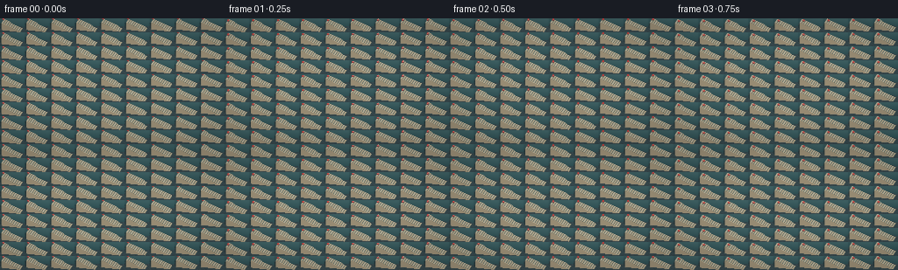
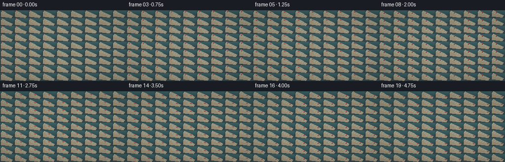
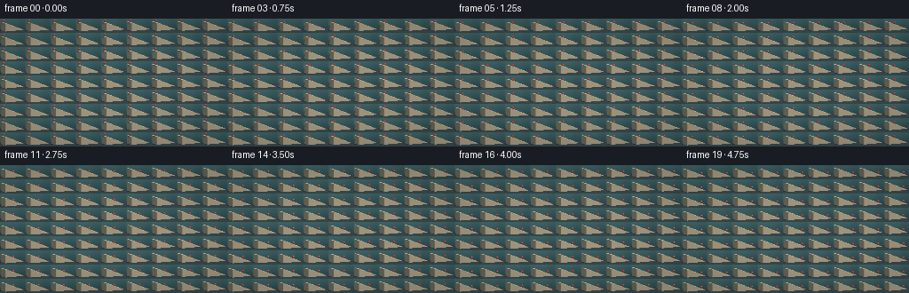
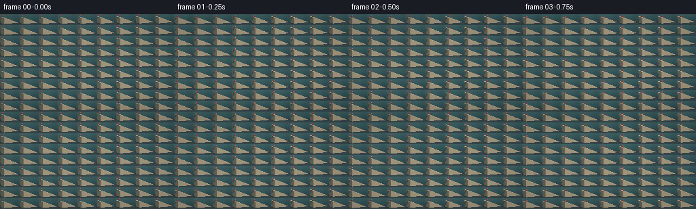
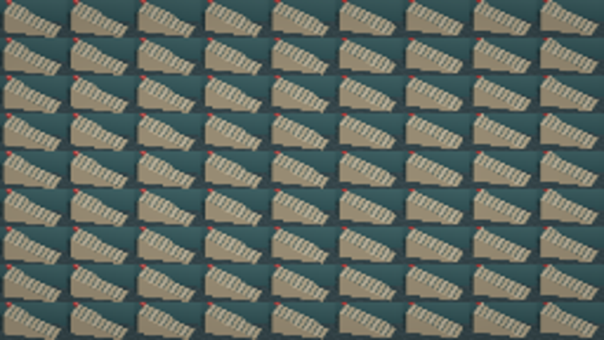
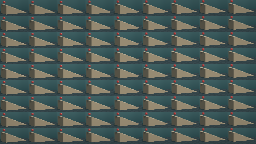
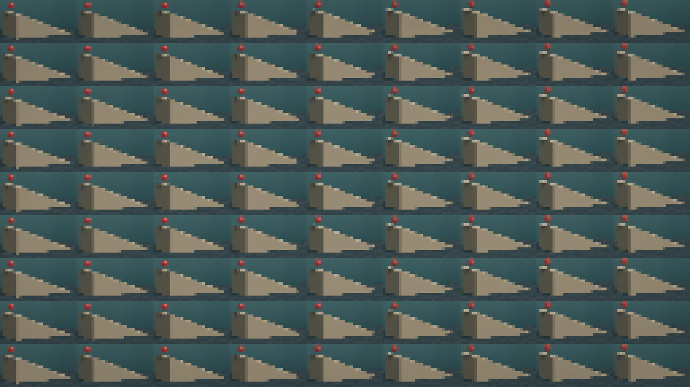

CODING AGENTS AS PIXEL WORLD MODELS
traex/DeepSeek-V4.1-Flash · instance_preservation_0021
点击播放 · 原生 RGB 像素
逐轮保存的候选
回放视频、检查图与代码变化。
每份候选均可单独播放。实际图片检查记录在下方工具轨迹中。
候选 01播放与检查图
点击播放 · 原生 RGB 像素


展开代码变化
--- 上一保存版本
+++ 本次保存版本
@@ -0,0 +1,402 @@
+"""Procedural render of a red ball bouncing down a staircase.
+
+The scene is ray traced with NumPy at a supersampled resolution. Frames are
+rendered from analytic stair geometry and a hand-tuned ballistic trajectory,
+then averaged over a short shutter interval to retain motion blur.
+"""
+
+from __future__ import annotations
+
+from pathlib import Path
+
+import numpy as np
+
+import artifact_io
+
+
+ROOT = Path(__file__).resolve().parent
+WIDTH, HEIGHT = 256, 144
+FRAMES, FPS = 20, 4.0
+SUPERSAMPLE = 3
+SHUTTER_SAMPLES = 3
+
+
+def srgb(hex_color: str) -> np.ndarray:
+ value = np.array([int(hex_color[i : i + 2], 16) for i in (0, 2, 4)], dtype=np.float64)
+ value /= 255.0
+ return np.where(value <= 0.04045, value / 12.92, ((value + 0.055) / 1.055) ** 2.4)
+
+
+def normalize(vector: np.ndarray) -> np.ndarray:
+ return vector / np.linalg.norm(vector)
+
+
+def smoothstep(edge0: float, edge1: float, value: np.ndarray) -> np.ndarray:
+ x = np.clip((value - edge0) / (edge1 - edge0), 0.0, 1.0)
+ return x * x * (3.0 - 2.0 * x)
+
+
+# Scene palette, defined in linear light.
+WALL_COLOR = srgb("476b6d")
+WALL_DARK = srgb("2d4e52")
+FLOOR_COLOR = srgb("303a3e")
+FLOOR_ALT = srgb("374247")
+TOP_COLOR = srgb("d8c5a2")
+TOP_ALT = srgb("cbb58f")
+RISER_COLOR = srgb("31575b")
+RISER_DARK = srgb("223f44")
+BALL_COLOR = srgb("df2b24")
+BALL_DEEP = srgb("8f100f")
+
+# Camera: an orthographic three-quarter view from the front-right and above.
+CAMERA_DIRECTION = normalize(np.array([-0.28, 1.0, -0.50]))
+CAMERA_RIGHT = normalize(np.cross(CAMERA_DIRECTION, np.array([0.0, 0.0, 1.0])))
+CAMERA_UP = normalize(np.cross(CAMERA_RIGHT, CAMERA_DIRECTION))
+CAMERA_CENTER = np.array([-0.12, 0.05, 1.10])
+ORTHO_WIDTH = 7.35
+VIEW_TO_CAMERA = -CAMERA_DIRECTION
+LIGHT = normalize(np.array([0.38, -0.60, 0.78]))
+FILL_LIGHT = normalize(np.array([-0.55, -0.22, 0.35]))
+
+# Stair geometry.
+STEP_COUNT = 10
+STEP_WIDTH = 0.58
+STEP_HEIGHT = 0.24
+STAIR_X0 = -3.15
+STAIR_Y0, STAIR_Y1 = -1.25, 1.45
+STAIR_Z0 = -0.12
+BALL_RADIUS = 0.325
+
+
+def step_top(index: int) -> float:
+ return (STEP_COUNT - 1 - index) * STEP_HEIGHT
+
+
+STAIRS = np.array(
+ [
+ [
+ STAIR_X0 + i * STEP_WIDTH,
+ STAIR_X0 + (i + 1) * STEP_WIDTH,
+ STAIR_Y0,
+ STAIR_Y1,
+ STAIR_Z0,
+ step_top(i),
+ ]
+ for i in range(STEP_COUNT)
+ ],
+ dtype=np.float64,
+)
+
+
+# Contact times and positions are designed to read as a consistent series of
+# increasingly relaxed bounces. Within each interval the ball follows an
+# exact parabola ending on the next tread.
+CONTACT_TIMES = np.array([0.30, 0.80, 1.31, 1.83, 2.36, 2.90, 3.45, 4.01, 4.58, 5.16])
+CONTACT_X = np.array([-2.80 + 0.58 * i for i in range(STEP_COUNT)])
+CONTACT_Z = np.array([step_top(i) + BALL_RADIUS for i in range(STEP_COUNT)])
+GRAVITY = 8.5
+
+
+def ball_position(time: float) -> np.ndarray:
+ """Return the ball center at an arbitrary time in seconds."""
+ if time <= CONTACT_TIMES[0]:
+ u = np.clip(time / CONTACT_TIMES[0], 0.0, 1.0)
+ x = -2.94 + (CONTACT_X[0] + 2.94) * u
+ start_z = CONTACT_Z[0] + 0.50
+ z = start_z + (CONTACT_Z[0] - start_z) * u - 0.22 * np.sin(np.pi * u)
+ return np.array([x, 0.06, z])
+
+ if time >= CONTACT_TIMES[-1]:
+ index = STEP_COUNT - 1
+ dt = time - CONTACT_TIMES[index]
+ return np.array([CONTACT_X[index] + 1.15 * dt, 0.06, CONTACT_Z[index] + 0.55 * dt])
+
+ index = int(np.searchsorted(CONTACT_TIMES, time, side="right") - 1)
+ dt_total = CONTACT_TIMES[index + 1] - CONTACT_TIMES[index]
+ u = (time - CONTACT_TIMES[index]) / dt_total
+ dz = CONTACT_Z[index + 1] - CONTACT_Z[index]
+ v0 = (dz + 0.5 * GRAVITY * dt_total * dt_total) / dt_total
+ x = CONTACT_X[index] + (CONTACT_X[index + 1] - CONTACT_X[index]) * u
+ z = CONTACT_Z[index] + v0 * dt_total * u - 0.5 * GRAVITY * dt_total**2 * u**2
+ return np.array([x, 0.06, z])
+
+
+def make_rays(width: int, height: int, sample_count: int) -> tuple[np.ndarray, np.ndarray]:
+ """Create jittered orthographic rays for a supersampled image."""
+ pixels = width * height
+ ys, xs = np.mgrid[0:height, 0:width]
+ base_x = ((xs.reshape(-1) + 0.5) / width - 0.5) * ORTHO_WIDTH
+ base_y = (0.5 - (ys.reshape(-1) + 0.5) / height) * ORTHO_WIDTH * height / width
+
+ # One deterministic low-discrepancy offset per supersample.
+ indices = np.arange(sample_count, dtype=np.float64)
+ jitter_x = ((indices * 0.61803398875) % 1.0 - 0.5) / width
+ jitter_y = ((indices * 0.41421356237) % 1.0 - 0.5) / height
+
+ origins = np.empty((sample_count, pixels, 3), dtype=np.float64)
+ for sample in range(sample_count):
+ sx = base_x + jitter_x[sample] * ORTHO_WIDTH
+ sy = base_y + jitter_y[sample] * ORTHO_WIDTH * height / width
+ origins[sample] = (
+ CAMERA_CENTER
+ + sx[:, None] * CAMERA_RIGHT
+ + sy[:, None] * CAMERA_UP
+ - CAMERA_DIRECTION * 12.0
+ )
+ directions = np.broadcast_to(CAMERA_DIRECTION, origins.shape)
+ return origins.reshape(-1, 3), directions.reshape(-1, 3)
+
+
+def intersect_boxes(
+ origins: np.ndarray, directions: np.ndarray, boxes: np.ndarray
+) -> tuple[np.ndarray, np.ndarray, np.ndarray]:
+ count = origins.shape[0]
+ nearest = np.full(count, np.inf)
+ nearest_id = np.full(count, -1, dtype=np.int32)
+ nearest_normal = np.zeros((count, 3), dtype=np.float64)
+
+ for box_id, box in enumerate(boxes):
+ lower = box[[0, 2, 4]]
+ upper = box[[1, 3, 5]]
+ with np.errstate(divide="ignore", invalid="ignore"):
+ t1 = (lower[None, :] - origins) / directions
+ t2 = (upper[None, :] - origins) / directions
+ t_near = np.minimum(t1, t2)
+ t_far = np.maximum(t1, t2)
+ enter = np.max(t_near, axis=1)
+ exit_ = np.min(t_far, axis=1)
+ valid = (exit_ >= np.maximum(enter, 0.0)) & (enter < nearest)
+ if not np.any(valid):
+ continue
+
+ axis = np.argmax(t_near, axis=1)
+ sign = np.where(directions[np.arange(count), axis] > 0.0, -1.0, 1.0)
+ normals = np.zeros((count, 3), dtype=np.float64)
+ rows = np.arange(count)
+ normals[rows, axis] = sign
+ nearest[valid] = enter[valid]
+ nearest_id[valid] = box_id
+ nearest_normal[valid] = normals[valid]
+
+ return nearest, nearest_id, nearest_normal
+
+
+def intersect_sphere(
+ origins: np.ndarray, directions: np.ndarray, center: np.ndarray, radius: float
+) -> tuple[np.ndarray, np.ndarray]:
+ offset = origins - center
+ b = np.einsum("ij,ij->i", offset, directions)
+ c = np.einsum("ij,ij->i", offset, offset) - radius * radius
+ discriminant = b * b - c
+ hit = discriminant >= 0.0
+ distance = np.full(origins.shape[0], np.inf)
+ root = np.sqrt(np.maximum(discriminant[hit], 0.0))
+ distance[hit] = -b[hit] - root
+ distance[distance < 0.0] = np.inf
+ return distance, hit
+
+
+def shadow_factor(
+ points: np.ndarray,
+ normals: np.ndarray,
+ ball_center: np.ndarray,
+) -> np.ndarray:
+ """Soft ball shadow plus hard stair shadow along the key-light ray."""
+ count = points.shape[0]
+ origins = points + normals * 0.002
+ factor = np.ones(count)
+
+ # Analytic penumbra from the sphere gives a smooth, circular contact shadow.
+ to_ball = ball_center[None, :] - origins
+ along = np.einsum("ij,j->i", to_ball, LIGHT)
+ perpendicular = np.sqrt(np.maximum(np.einsum("ij,ij->i", to_ball, to_ball) - along**2, 0.0))
+ sphere_occlusion = 1.0 - smoothstep(
+ BALL_RADIUS * 0.70, BALL_RADIUS * 1.65, perpendicular
+ )
+ sphere_occlusion *= (along > 0.0)
+ factor *= 1.0 - 0.62 * sphere_occlusion
+
+ directions = np.broadcast_to(LIGHT, points.shape)
+ stair_distance, stair_id, _ = intersect_boxes(origins, directions, STAIRS)
+ factor *= np.where(stair_distance < 20.0, 0.46, 1.0)
+ return factor
+
+
+def shade(
+ points: np.ndarray,
+ normals: np.ndarray,
+ object_ids: np.ndarray,
+ material_ids: np.ndarray,
+ ball_center: np.ndarray,
+) -> np.ndarray:
+ count = points.shape[0]
+ color = np.zeros((count, 3), dtype=np.float64)
+ shadows = shadow_factor(points, normals, ball_center)
+
+ # Wall.
+ wall = material_ids == 1
+ if np.any(wall):
+ p = points[wall]
+ n = normals[wall]
+ gradient = np.clip((p[:, 2] + 0.2) / 3.2, 0.0, 1.0)
+ base = WALL_DARK[None, :] * (1.0 - gradient[:, None]) + WALL_COLOR[None, :] * gradient[:, None]
+ diffuse = 0.33 + 0.67 * np.maximum(n @ LIGHT, 0.0)
+ vignette = 1.0 - 0.12 * np.clip((np.abs(p[:, 0]) - 2.2) / 1.6, 0.0, 1.0)
+ color[wall] = base * diffuse[:, None] * vignette[:, None] * shadows[wall, None]
+
+ # Floor: restrained stone tiles with thin grout.
+ floor = material_ids == 2
+ if np.any(floor):
+ p = points[floor]
+ n = normals[floor]
+ tile_x = np.floor((p[:, 0] + 10.0) / 0.82)
+ tile_y = np.floor((p[:, 1] + 10.0) / 0.74)
+ alternate = ((tile_x + tile_y) % 2.0) > 0.5
+ base = np.where(alternate[:, None], FLOOR_ALT[None, :], FLOOR_COLOR[None, :])
+ grout_x = np.abs(((p[:, 0] + 10.0) / 0.82) % 1.0 - 0.5) > 0.475
+ grout_y = np.abs(((p[:, 1] + 10.0) / 0.74) % 1.0 - 0.5) > 0.482
+ grout = grout_x | grout_y
+ base = np.where(grout[:, None], base * 0.68, base)
+ diffuse = 0.34 + 0.66 * np.maximum(n @ LIGHT, 0.0)
+ color[floor] = base * diffuse[:, None] * shadows[floor, None]
+
+ # Stair boxes. Top treads are pale sandstone; visible risers are deep teal.
+ stair = material_ids == 3
+ if np.any(stair):
+ p = points[stair]
+ n = normals[stair]
+ ids = object_ids[stair]
+ local_x = p[:, 0] - STAIRS[ids, 0]
+ top = n[:, 2] > 0.8
+ riser = n[:, 0] > 0.8
+ side = ~(top | riser)
+
+ top_color = np.where(
+ (ids % 2)[:, None] == 0,
+ TOP_COLOR[None, :],
+ TOP_ALT[None, :],
+ )
+ edge = smoothstep(0.0, 0.055, np.minimum(local_x, STEP_WIDTH - local_x))
+ top_color *= (0.84 + 0.16 * edge)[:, None]
+ front_edge = 1.0 - smoothstep(0.0, 0.018, STEP_WIDTH - local_x)
+ top_color += front_edge[:, None] * np.array([0.035, 0.028, 0.018])
+
+ riser_color = RISER_DARK[None, :] + (
+ RISER_COLOR - RISER_DARK
+ )[None, :] * np.clip((p[:, 2] - STAIR_Z0) / (STEP_COUNT * STEP_HEIGHT), 0.0, 1.0)[:, None]
+ side_color = srgb("b6a17f")[None, :]
+
+ base = np.where(top[:, None], top_color, np.where(riser[:, None], riser_color, side_color))
+ diffuse = 0.30 + 0.70 * np.maximum(n @ LIGHT, 0.0)
+ fill = 0.08 * np.maximum(n @ FILL_LIGHT, 0.0)
+ color[stair] = base * (diffuse + fill)[:, None] * shadows[stair, None]
+
+ # Glossy red ball.
+ ball = material_ids == 4
+ if np.any(ball):
+ n = normals[ball]
+ view = np.broadcast_to(VIEW_TO_CAMERA, n.shape)
+ half_vector = normalize(LIGHT + VIEW_TO_CAMERA)
+ diffuse = np.maximum(n @ LIGHT, 0.0)
+ fill = np.maximum(n @ FILL_LIGHT, 0.0)
+ fresnel = (1.0 - np.maximum(np.einsum("ij,ij->i", n, view), 0.0)) ** 2.4
+ specular = np.maximum(n @ half_vector, 0.0) ** 72.0
+ deep_mix = np.clip(0.35 + 0.65 * diffuse, 0.0, 1.0)
+ base = BALL_DEEP[None, :] * (1.0 - deep_mix[:, None]) + BALL_COLOR[None, :] * deep_mix[:, None]
+ rim_color = srgb("79b8bb")
+ color[ball] = (
+ base * (0.27 + 0.95 * diffuse[:, None] + 0.16 * fill[:, None])
+ + specular[:, None] * np.array([1.25, 1.18, 1.08])
+ + fresnel[:, None] * 0.10 * rim_color[None, :]
+ )
+
+ return color
+
+
+def render_subframe(time: float, width: int, height: int) -> np.ndarray:
+ sample_count = SUPERSAMPLE * SUPERSAMPLE
+ origins, directions = make_rays(width, height, sample_count)
+ ball_center = ball_position(time)
+ count = origins.shape[0]
+
+ nearest = np.full(count, np.inf)
+ object_ids = np.full(count, -1, dtype=np.int32)
+ normals = np.zeros((count, 3), dtype=np.float64)
+ material_ids = np.zeros(count, dtype=np.int8)
+
+ # Wall plane at y=2.65.
+ t_wall = (2.65 - origins[:, 1]) / directions[:, 1]
+ valid = (t_wall > 0.0) & (t_wall < nearest)
+ nearest[valid] = t_wall[valid]
+ normals[valid] = np.array([0.0, -1.0, 0.0])
+ material_ids[valid] = 1
+
+ # Floor plane.
+ t_floor = (STAIR_Z0 - origins[:, 2]) / directions[:, 2]
+ valid = (t_floor > 0.0) & (t_floor < nearest)
+ nearest[valid] = t_floor[valid]
+ normals[valid] = np.array([0.0, 0.0, 1.0])
+ material_ids[valid] = 2
+
+ stair_t, stair_id, stair_n = intersect_boxes(origins, directions, STAIRS)
+ valid = stair_t < nearest
+ nearest[valid] = stair_t[valid]
+ object_ids[valid] = stair_id[valid]
+ normals[valid] = stair_n[valid]
+ material_ids[valid] = 3
+
+ sphere_t, _ = intersect_sphere(origins, directions, ball_center, BALL_RADIUS)
+ valid = sphere_t < nearest
+ nearest[valid] = sphere_t[valid]
+ object_ids[valid] = STEP_COUNT
+ hit_points = origins[valid] + directions[valid] * sphere_t[valid, None]
+ normals[valid] = (hit_points - ball_center) / BALL_RADIUS
+ material_ids[valid] = 4
+
+ points = origins + directions * nearest[:, None]
+ radiance = shade(points, normals, object_ids, material_ids, ball_center)
+
+ # Gentle depth haze and exposure. Values are linear before display encoding.
+ haze = np.clip(nearest / 18.0, 0.0, 0.20)
+ radiance = radiance * (1.0 - haze[:, None]) + WALL_DARK[None, :] * haze[:, None]
+ mapped = 1.0 - np.exp(-1.35 * radiance)
+ display = np.where(
+ mapped <= 0.0031308,
+ mapped * 12.92,
+ 1.055 * np.power(np.maximum(mapped, 0.0), 1.0 / 2.4) - 0.055,
+ )
+
+ image = display.reshape(height, width, sample_count, 3).mean(axis=2)
+ return np.clip(image, 0.0, 1.0)
+
+
+def render_frame(frame_index: int) -> np.ndarray:
+ center_time = frame_index / FPS
+ shutter = 0.055
+ times = center_time + np.linspace(-0.5, 0.5, SHUTTER_SAMPLES) * shutter
+ times = np.clip(times, 0.0, (FRAMES - 1) / FPS)
+ accumulated = np.zeros((HEIGHT, WIDTH, 3), dtype=np.float64)
+ for time in times:
+ accumulated += render_subframe(float(time), WIDTH, HEIGHT)
+ accumulated /= SHUTTER_SAMPLES
+
+ # A very subtle vignette keeps the center focused without hiding the stair.
+ yy, xx = np.mgrid[0:HEIGHT, 0:WIDTH]
+ nx = (xx + 0.5) / WIDTH * 2.0 - 1.0
+ ny = (yy + 0.5) / HEIGHT * 2.0 - 1.0
+ vignette = 1.0 - 0.10 * np.clip((nx * nx * 0.72 + ny * ny) - 0.20, 0.0, 1.0)
+ accumulated *= vignette[:, :, None]
+ return np.round(np.clip(accumulated, 0.0, 1.0) * 255.0).astype(np.uint8)
+
+
+def main() -> None:
+ frames = np.empty((FRAMES, HEIGHT, WIDTH, 3), dtype=np.uint8)
+ for index in range(FRAMES):
+ frames[index] = render_frame(index)
+ print(f"rendered frame {index + 1:02d}/{FRAMES}", flush=True)
+ artifact_io.save(frames, ROOT)
+ print("saved pixels.npz, frames/, inspection.png, transition_check.png, index.html")
+
+
+if __name__ == "__main__":
+ main()
候选 02播放与检查图
点击播放 · 原生 RGB 像素

展开代码变化
--- 上一保存版本
+++ 本次保存版本
@@ -48,12 +48,13 @@
BALL_COLOR = srgb("df2b24")
BALL_DEEP = srgb("8f100f")
-# Camera: an orthographic three-quarter view from the front-right and above.
-CAMERA_DIRECTION = normalize(np.array([-0.28, 1.0, -0.50]))
+# Camera: an orthographic three-quarter view from the right and slightly above.
+# Looking across the stair run keeps every tread and riser legible.
+CAMERA_DIRECTION = normalize(np.array([0.52, 0.90, -0.17]))
CAMERA_RIGHT = normalize(np.cross(CAMERA_DIRECTION, np.array([0.0, 0.0, 1.0])))
CAMERA_UP = normalize(np.cross(CAMERA_RIGHT, CAMERA_DIRECTION))
-CAMERA_CENTER = np.array([-0.12, 0.05, 1.10])
-ORTHO_WIDTH = 7.35
+CAMERA_CENTER = np.array([-0.08, 0.02, 1.02])
+ORTHO_WIDTH = 7.15
VIEW_TO_CAMERA = -CAMERA_DIRECTION
LIGHT = normalize(np.array([0.38, -0.60, 0.78]))
FILL_LIGHT = normalize(np.array([-0.55, -0.22, 0.35]))
@@ -91,8 +92,8 @@
# Contact times and positions are designed to read as a consistent series of
# increasingly relaxed bounces. Within each interval the ball follows an
# exact parabola ending on the next tread.
-CONTACT_TIMES = np.array([0.30, 0.80, 1.31, 1.83, 2.36, 2.90, 3.45, 4.01, 4.58, 5.16])
-CONTACT_X = np.array([-2.80 + 0.58 * i for i in range(STEP_COUNT)])
+CONTACT_TIMES = np.array([0.22, 0.70, 1.19, 1.69, 2.20, 2.72, 3.25, 3.79, 4.34, 4.90])
+CONTACT_X = np.array([-2.86 + 0.58 * i for i in range(STEP_COUNT)])
CONTACT_Z = np.array([step_top(i) + BALL_RADIUS for i in range(STEP_COUNT)])
GRAVITY = 8.5
@@ -101,15 +102,15 @@
"""Return the ball center at an arbitrary time in seconds."""
if time <= CONTACT_TIMES[0]:
u = np.clip(time / CONTACT_TIMES[0], 0.0, 1.0)
- x = -2.94 + (CONTACT_X[0] + 2.94) * u
- start_z = CONTACT_Z[0] + 0.50
- z = start_z + (CONTACT_Z[0] - start_z) * u - 0.22 * np.sin(np.pi * u)
+ x = -3.02 + (CONTACT_X[0] + 3.02) * u
+ start_z = CONTACT_Z[0] + 0.38
+ z = start_z + (CONTACT_Z[0] - start_z) * u - 0.16 * np.sin(np.pi * u)
return np.array([x, 0.06, z])
if time >= CONTACT_TIMES[-1]:
index = STEP_COUNT - 1
dt = time - CONTACT_TIMES[index]
- return np.array([CONTACT_X[index] + 1.15 * dt, 0.06, CONTACT_Z[index] + 0.55 * dt])
+ return np.array([CONTACT_X[index] + 0.92 * dt, 0.06, CONTACT_Z[index] + 0.50 * dt])
index = int(np.searchsorted(CONTACT_TIMES, time, side="right") - 1)
dt_total = CONTACT_TIMES[index + 1] - CONTACT_TIMES[index]
候选 03播放与检查图
候选 04播放与检查图
点击播放 · 原生 RGB 像素


展开代码变化
--- 上一保存版本
+++ 本次保存版本
@@ -43,8 +43,8 @@
FLOOR_ALT = srgb("374247")
TOP_COLOR = srgb("d8c5a2")
TOP_ALT = srgb("cbb58f")
-RISER_COLOR = srgb("31575b")
-RISER_DARK = srgb("223f44")
+RISER_COLOR = srgb("426f72")
+RISER_DARK = srgb("294b50")
BALL_COLOR = srgb("df2b24")
BALL_DEEP = srgb("8f100f")
@@ -215,7 +215,7 @@
BALL_RADIUS * 0.70, BALL_RADIUS * 1.65, perpendicular
)
sphere_occlusion *= (along > 0.0)
- factor *= 1.0 - 0.62 * sphere_occlusion
+ factor *= 1.0 - 0.72 * sphere_occlusion
directions = np.broadcast_to(LIGHT, points.shape)
stair_distance, stair_id, _ = intersect_boxes(origins, directions, STAIRS)
@@ -288,9 +288,13 @@
side_color = srgb("b6a17f")[None, :]
base = np.where(top[:, None], top_color, np.where(riser[:, None], riser_color, side_color))
- diffuse = 0.30 + 0.70 * np.maximum(n @ LIGHT, 0.0)
- fill = 0.08 * np.maximum(n @ FILL_LIGHT, 0.0)
- color[stair] = base * (diffuse + fill)[:, None] * shadows[stair, None]
+ diffuse = 0.34 + 0.72 * np.maximum(n @ LIGHT, 0.0)
+ fill = 0.15 * np.maximum(n @ FILL_LIGHT, 0.0)
+ # A cool ambient bounce separates the dark risers from the wall.
+ ambient_bounce = 0.045 * srgb("5c9697")[None, :]
+ color[stair] = (
+ base * (diffuse + fill)[:, None] * shadows[stair, None] + ambient_bounce
+ )
# Glossy red ball.
ball = material_ids == 4
@@ -300,7 +304,7 @@
half_vector = normalize(LIGHT + VIEW_TO_CAMERA)
diffuse = np.maximum(n @ LIGHT, 0.0)
fill = np.maximum(n @ FILL_LIGHT, 0.0)
- fresnel = (1.0 - np.maximum(np.einsum("ij,ij->i", n, view), 0.0)) ** 2.4
+ fresnel = (1.0 - np.maximum(np.einsum("ij,ij->i", n, view), 0.0)) ** 2.8
specular = np.maximum(n @ half_vector, 0.0) ** 72.0
deep_mix = np.clip(0.35 + 0.65 * diffuse, 0.0, 1.0)
base = BALL_DEEP[None, :] * (1.0 - deep_mix[:, None]) + BALL_COLOR[None, :] * deep_mix[:, None]
@@ -308,7 +312,7 @@
color[ball] = (
base * (0.27 + 0.95 * diffuse[:, None] + 0.16 * fill[:, None])
+ specular[:, None] * np.array([1.25, 1.18, 1.08])
- + fresnel[:, None] * 0.10 * rim_color[None, :]
+ + fresnel[:, None] * 0.065 * rim_color[None, :]
)
return color
可观测工具轨迹
实际执行的命令与返回图片。
命令 1exit 0
/bin/bash -c "pwd && rg --files -g 'prompt.txt' -g 'GENERATION_RULES.md' -g 'task_spec.json' -g '"'!node_modules'"' -g '"'!*.mp4'"'"
命令 2exit 0
/bin/bash -c 'git status --short --branch'
命令 3exit 0
/bin/bash -c 'cat prompt.txt'
命令 4exit 0
/bin/bash -c 'cat GENERATION_RULES.md'
命令 5exit 0
/bin/bash -c 'cat task_spec.json'
命令 6exit 0
/bin/bash -c "find . -maxdepth 2 -type f -not -path './.git/*' -printf '%p %s bytes\\n' | sort"
命令 7exit 0
/bin/bash -c "sed -n '1,260p' artifact_io.py"
命令 8exit 0
/bin/bash -c "sed -n '1,240p' player_template.html"
命令 9exit 0
/bin/bash -c "python - <<'PY'
import importlib.util
for m in ['numpy','PIL','cv2','imageio','scipy']:
s=importlib.util.find_spec(m)
print(m, bool(s), s.origin if s else '')
PY"命令 10exit 0
/bin/bash -c 'python generate.py'
命令 11exit 0
/bin/bash -c "python - <<'PY'
from PIL import Image
import numpy as np
for i in [0,2,4,5,6,8,10,12,15,19]:
a=np.asarray(Image.open(f'frames/{i:02d}.png'))
mask=(a[:,:,0]>a[:,:,1]*1.45)&(a[:,:,0]>a[:,:,2]*1.35)&(a[:,:,0]>70)
ys,xs=np.where(mask)
print(i, 'red pixels',len(xs), 'bbox', (xs.min(),ys.min(),xs.max(),ys.max()) if len(xs) else None, 'mean',a.mean(axis=(0,1)).round(1))
PY"命令 12exit 0
/bin/bash -c "python - <<'PY' import generate as g, numpy as np for i in range(20): p=g.ball_position(i/4) sx=np.dot(p-g.CAMERA_CENTER,g.CAMERA_RIGHT) sy=np.dot(p-g.CAMERA_CENTER,g.CAMERA_UP) print(i, 'world',p.round(3),'screen',round(sx,3),round(sy,3),'px',round(128+sx/g.ORTHO_WIDTH*256),round(72-sy/(g.ORTHO_WIDTH*144/256)*144)) PY"
命令 13exit 0
/bin/bash -c "python - <<'PY'
from PIL import Image
im=Image.open('frames/00.png')
im.resize((1024,576)).save('.tmp/frame00_large.png')
PY"命令 14exit 0
/bin/bash -c "python - <<'PY'
import generate as g
print('right',g.CAMERA_RIGHT,'up',g.CAMERA_UP,'dir',g.CAMERA_DIRECTION)
for i,b in enumerate(g.STAIRS):
p=(b[:3]+b[3:])/2
sx=(p-g.CAMERA_CENTER)@g.CAMERA_RIGHT
sy=(p-g.CAMERA_CENTER)@g.CAMERA_UP
print(i, 'screen',round(sx,2),round(sy,2))
PY"命令 15exit 0
/bin/bash -c "python - <<'PY'
import numpy as np
D=np.array([.28,1.,-.5]);D=D/np.linalg.norm(D);R=np.cross(D,[0,0,1.]);R=R/np.linalg.norm(R);U=np.cross(R,D);U=U/np.linalg.norm(U)
print(D,R,U)
C=np.array([-.15,.05,1.05]); ow=7.35
for z in [2.16,1.92,1.2,0]:
for x in [-3.15,2.65]:
p=np.array([x,0,z]); sx=(p-C)@R;sy=(p-C)@U
print('x,z',x,z,'screen',round(sx,2),round(sy,2),'px',round(128+sx/ow*256),round(72-sy/(ow*144/256)*144))
print('ball')
for t in [0,1.25,2.5,3.75,4.75]:
z=2.985 if t==0 else 0.7
p=np.array([-2.9+1.2*t,0,z]);sx=(p-C)@R;sy=(p-C)@U
print(t,round(sx,2),round(sy,2),round(128+sx/ow*256),round(72-sy/(ow*144/256)*144))
PY"命令 16exit 0
/bin/bash -c "python - <<'PY'
import numpy as np
for D0 in [[.2,1,-.5],[.25,1,-.45],[.32,1,-.42]]:
D=np.array(D0);D/=np.linalg.norm(D);R=np.cross(D,[0,0,1.]);R/=np.linalg.norm(R);U=np.cross(R,D);U/=np.linalg.norm(U)
print('\\nD',D,'R',R,'U',U)
C=np.array([-.15,.05,1.1]);ow=6.5
for i in range(10):
x=-3.15+.58*(i+.5); z=(9-i)*.24
p=np.array([x,0,z]);sx=(p-C)@R;sy=(p-C)@U
print(i,round(sx,2),round(sy,2),end=' | ')
print()
PY"命令 17exit 0
/bin/bash -c "python - <<'PY'
import generate as g, numpy as np
for i in range(20):
p=g.ball_position(i/4)
sx=(p-g.CAMERA_CENTER)@g.CAMERA_RIGHT;sy=(p-g.CAMERA_CENTER)@g.CAMERA_UP
print(i, p.round(2), 'px',round(128+sx/g.ORTHO_WIDTH*256),round(72-sy/(g.ORTHO_WIDTH*144/256)*144))
print('stairs screen x range')
for b in g.STAIRS:
corners=np.array([[x,y,z] for x in b[:2] for y in b[2:4] for z in [b[4],b[5]]])
ss=(corners-g.CAMERA_CENTER)@g.CAMERA_RIGHT
print(round(128+ss.min()/g.ORTHO_WIDTH*256),round(128+ss.max()/g.ORTHO_WIDTH*256))
PY"命令 18exit 0
/bin/bash -c 'python generate.py'
命令 19exit 0
/bin/bash -c "python - <<'PY'
from PIL import Image
import numpy as np
for i in [0,2,4,6,8,10,12,14,16,18,19]:
a=np.asarray(Image.open(f'frames/{i:02d}.png'))
# saturated red pixels, excluding brown sandstone
mask=(a[:,:,0]>110)&(a[:,:,0]>a[:,:,1]*1.8)&(a[:,:,0]>a[:,:,2]*1.7)
ys,xs=np.where(mask)
print(i, len(xs), (int(xs.min()),int(ys.min()),int(xs.max()),int(ys.max())) if len(xs) else None)
PY"命令 20exit 0
/bin/bash -c "python - <<'PY'
from PIL import Image
im=Image.open('frames/00.png')
im.resize((1024,576),Image.Resampling.NEAREST).save('.tmp/f00nearest.png')
PY"命令 21exit 0
/bin/bash -c "python - <<'PY' import generate as g, numpy as np for t in [0,.5,1,1.5,2,2.5,3,3.5,4,4.75]: p=g.ball_position(t) sx=(p-g.CAMERA_CENTER)@g.CAMERA_RIGHT;sy=(p-g.CAMERA_CENTER)@g.CAMERA_UP print(t,p,round(128+sx/g.ORTHO_WIDTH*256),round(72-sy/(g.ORTHO_WIDTH*144/256)*144)) PY"
命令 22exit 0
/bin/bash -c 'python generate.py'
命令 23exit 0
/bin/bash -c "python - <<'PY'
import json, numpy as np
from pathlib import Path
spec=json.loads(Path('task_spec.json').read_text())
z=np.load('pixels.npz')['pixels']
print('npz shape:', z.shape, 'dtype:', z.dtype)
print('spec:', spec)
assert z.shape == (spec['height'], spec['width'], spec['frames'])
assert len(list(Path('frames').glob('*.png'))) == spec['frames']
for p in ['pixels.npz','inspection.png','transition_check.png','index.html','generate.py']:
print(p, Path(p).stat().st_size)
PY"命令 24exit 0
/bin/bash -c "python -m py_compile generate.py && python - <<'PY'
from pathlib import Path
s=Path('index.html').read_text()
assert 'window.__pixelReady=true' in s
assert '\"frames\":20' in s
assert '__DATA__' not in s
print('player payload present; bytes:', len(s))
PY"命令 25exit 0
/bin/bash -c "du -sh . && find . -maxdepth 2 -type f -printf '%p %s\\n' | sort"
视觉工具实际返回图片 1

视觉工具实际返回图片 2

视觉工具实际返回图片 3

视觉工具实际返回图片 4

视觉工具实际返回图片 5

视觉工具实际返回图片 6

保存候选 4 份；完成命令 25 次；可验证图片返回 6 张。原始 API 响应与完整日志保留在本地。